两款产品，确认定稿
B · 今天是什么表情？
参考 063 的表情、文字与拼布关系。三枚独立头像，用 YUM / ZZZ / YAY 区分状态。

C · 快乐加一格
参考 052 的窗口拼贴与角色互动。披萨、椰子、奖励星与短语形成街机式小场景。

对照用户指定的 063 / 052 原款

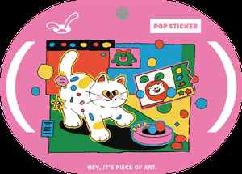
三只兔子，三枚食物英文小贴
一包共六枚：三只兔子各一枚；披萨＋YUM!、冰淇淋＋SWEET!、椰子＋CHILL!各是一枚小贴。英文与小食物共用连续外轮廓，兔子保持独立。

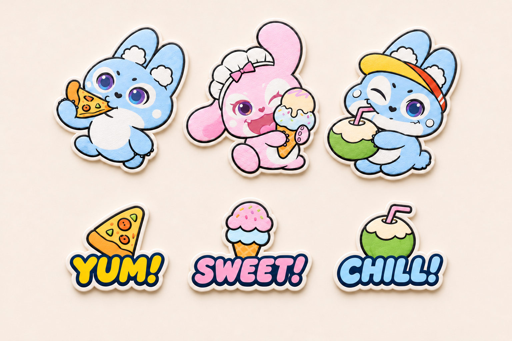


拿在手里，贴进日常
表情款用在手机，街机款在包包上组成一组小场景。以成人手掌、完整手机和包身作参照，贴纸保持日常小物的大小。
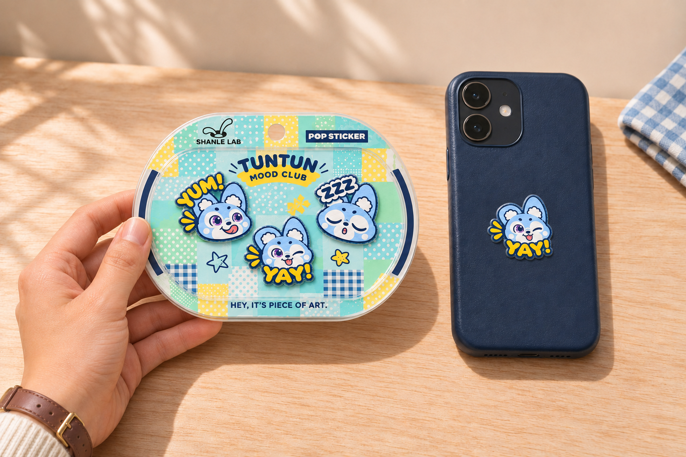
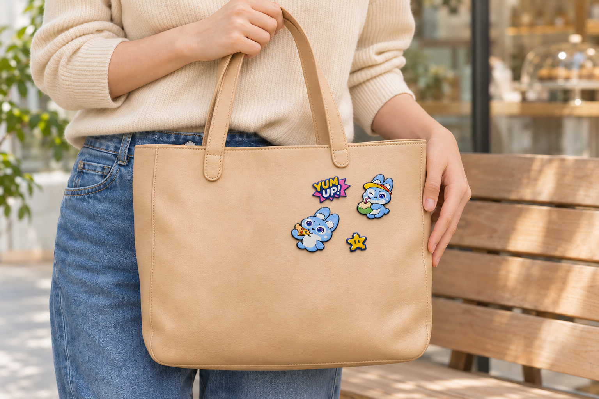
大画面负责吸引，小商品保持售卖尺度
以最新现场照为基准，保留四包商品在背板中的大小与挂位，以及木托盘、后方挂货、前排卡套和护照夹。立牌展示故事与应用，销售包装不再排成大号方袋。
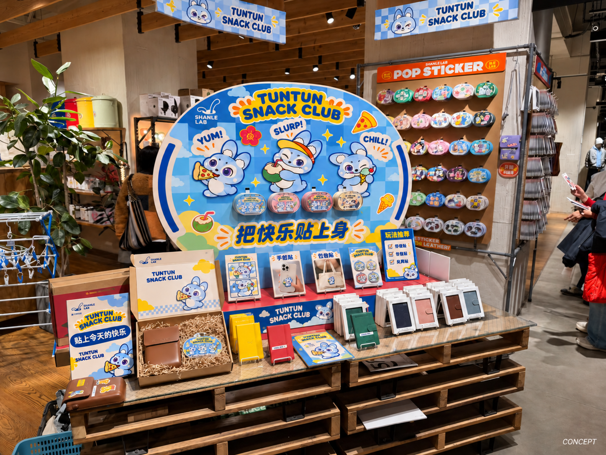
这是现场替换视觉稿；保留照片中的尺度关系，不据此反推家具实测尺寸。
快乐营业中：看故事、选款、试贴
借鉴 Meeko 手册第 8、17 页的连续日常故事，以及同一图案在不同物件上的呼应。沿用纸中岛构造，增加漫画层板、三组挂货、表情窗口与试贴台；手机、护照夹和包装按小实物呈现。

按约 3m × 3m 的概念占地探索，未取得场地方实测图。中岛构造延续既有 MLBB 纸中岛，新增墙板、层板与柜体仍需结构落图。
包装结构回到实拍，撤回错误的平面比例稿
真实包装包含扁圆横向内卡、顶端挂孔区、两侧印刷弧线，以及浅透明 PET 罩和凸边。不能将一张平面椭圆当作整个实体包装，也不能用普通椭圆替代固定轮廓。
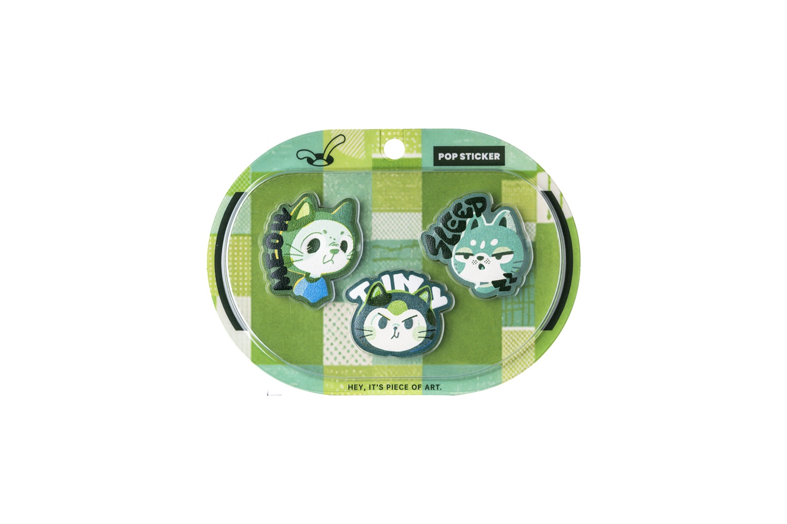
本轮使用的原始品牌标识
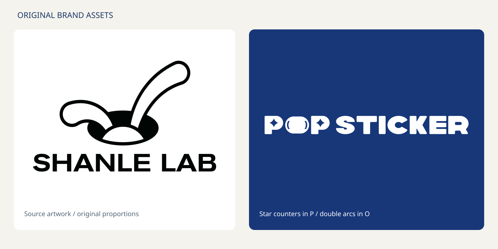
04 · 三枚零食小剧场，保留继续比较
用户反馈“还行”：记录为方向暂留，原图不改，不扩大为生产或整体包装批准。
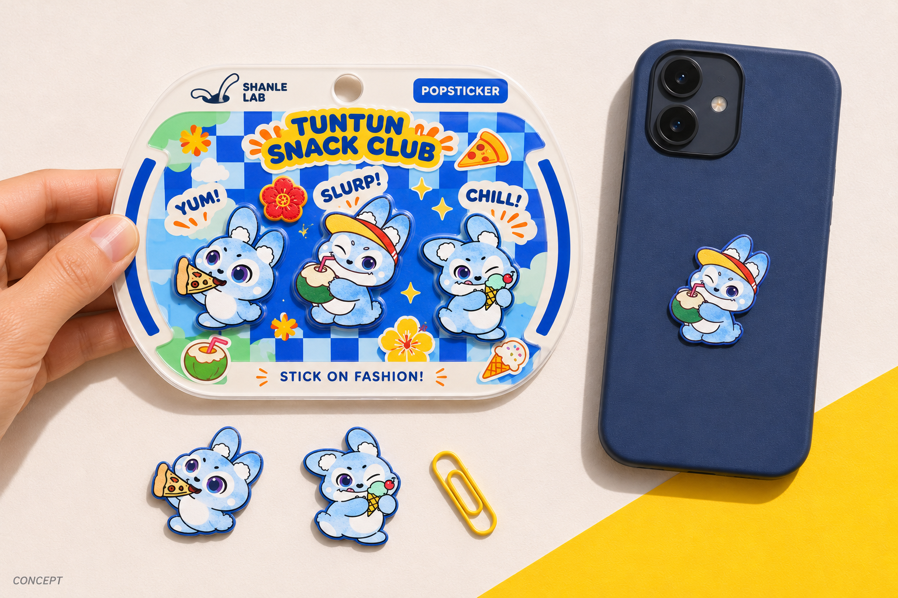
其余现有萌宠款与实拍参考
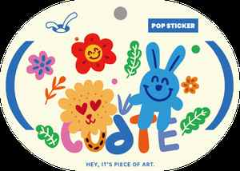
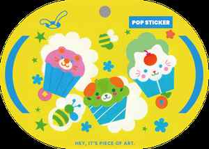
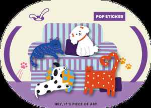
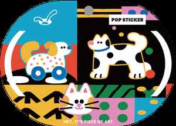
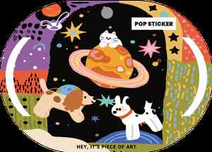
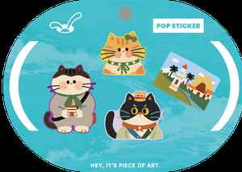
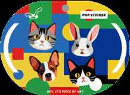
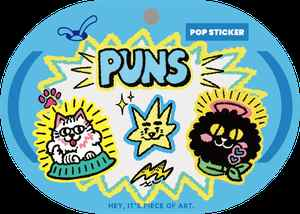
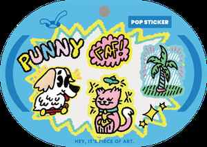
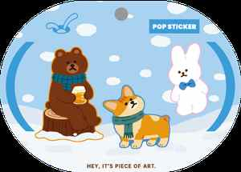
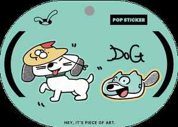
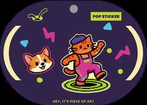
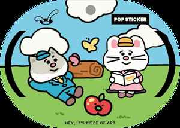
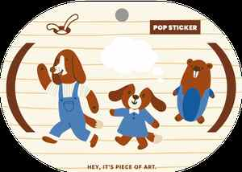
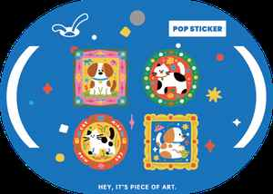
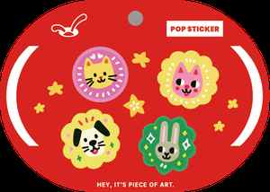
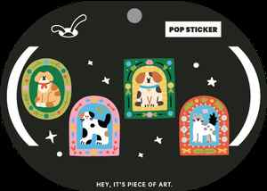
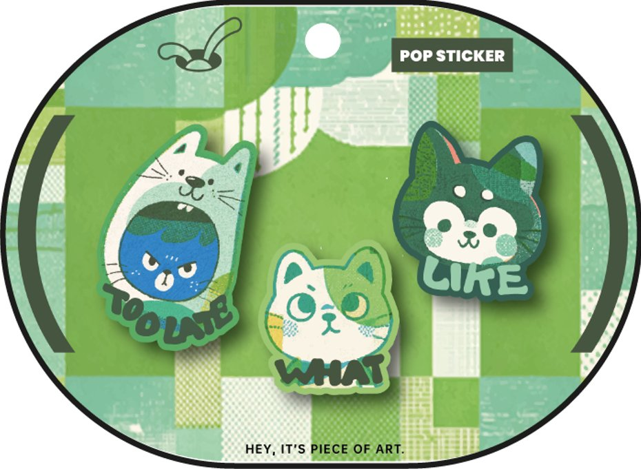
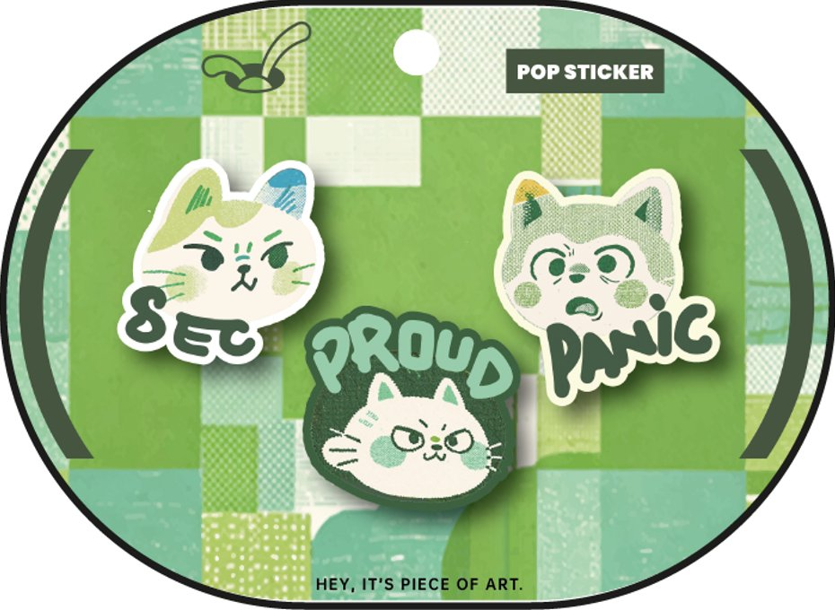
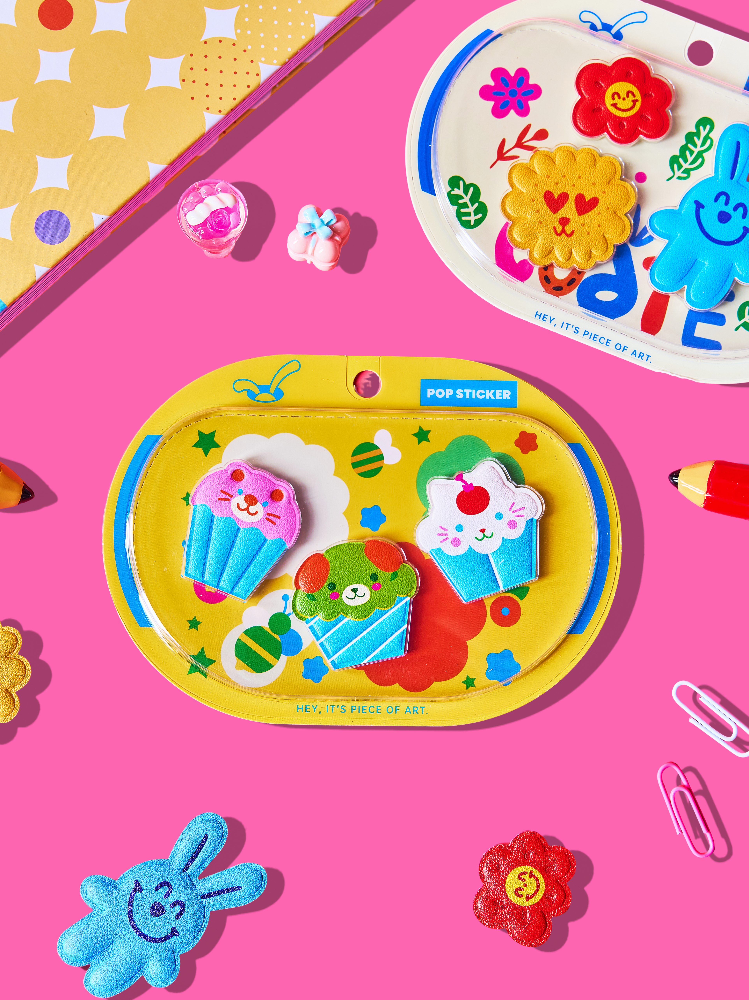
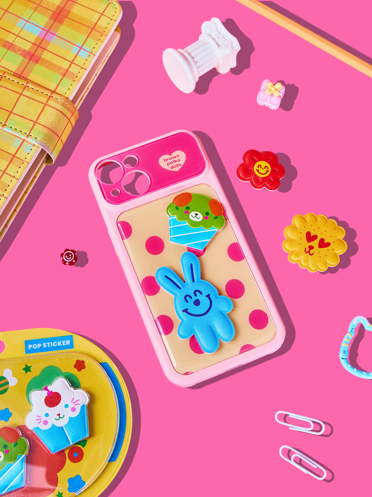